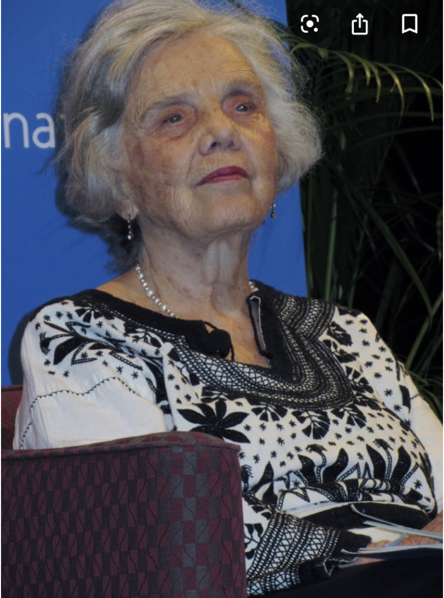

Filoginia - Antología escolar de escritoras hispánicas contemporáneas
Elena Poniatowska
Retrato de Elena Poniatowska
Pablo López Matellán. Retrato de Elena Poniatowska(CC BY-SA)
Pablo López Matellán. Retrato gráfico de Elena Ponioatowska(CC BY-SA)
Elena Poniatowska nació el 19 de mayo de 1932 en París y tiene 88 años.
Es hija del príncipe Jean E. Poniatowski y de la mexicana María de los Dolores Amor Escandón; es sobrina de la poeta mexicana Pita Amor.
Tuvo tres hijos llamados Emmanuel, Felipe y Paula Haro Poniatowski.
Es una mujer con el pelo corto, de color blanco. Su color de piel es claro. Es una mujer bajita.
Estudió en la Universidad Nacional Autónoma de México y, antes, en el Liceo Franco-Mexicano. Ganó el Premio de Miguel de Cervantes en 2014, el Premio Rómulo Gallego en 2007 y una Beca Guggenheim en Artes, América Latina y Caribe en 1994.
Estudió para taquimecanógrafa, periodismo y acabó escribiendo libros.
Pablo López Matellán. Elena Poniatowska, Querido Diego, te abraza Quiela(CC BY-SA)
Autora
Elena Poniatowska nacida en París el 19 de mayo de 1932, es una escritora, periodista y activista mexicana. Su obra literaria tiene una marcada orientación social y política. El libro es Querido Diego, te abraza Quiela.
Género y tema principal
El tema principal de esta novela epistolar es el trágico final de la relación de los protagonistas Angelina Beloff, una rusa exiliada en París y Diego Rivera, un pintor mexicano que se fue sin ella a México con la promesa de que le enviara dinero para su billete en cuanto pudiera.
Antecedentes de la lectura
La idea de esta novela es mostrar cómo fue el desamor de esta pobre mujer que pasó por la vida del pintor como la primera mujer que tuvo. Tras una larga relación de 10 años, muy pasional y tormentosa, Angelina sufre una separación muy dolorosa. Cómo Diego abandona a Quiela (así llamaba de forma cariñosa) y la deja sola.
Lectura
Siento no haber empezado a pintar más joven y ahora que ha pasado el tiempo, cómo añoro aquellos años de Universidad en San Petersburgo cuando opté por el dibujo. Al principio, mi padre iba por mí, todavía recuerdo cómo nuestros pasos resonaban en las calles vacías y regresábamos platicando (por las calles), me preguntaba por mis progresos, si no me intimidaba el hecho de que hubiera hombres en el curso nocturno de pintura. Después, al ver mi seguridad, la gentileza de mis compañeros, me dejó venir sola a la casa. Cuando gané la beca para la Academia de Bellas Artes de San Petersburgo ¡cuánto orgullo vi en su rostro!
Desde el primer día en que entré al atelier en París, me impuse un horario que solo tú podrías considerar aceptable, de ocho a doce y media del día, de una y media a cinco en la tarde, y todavía de ocho a diez de la noche. Nueve horas de pintura al día, ¿te imaginas tú lo que es eso? Diego, sí te lo imaginas tú, que solo vives para la pintura. Comía pensando en cómo lograr las sombras del rostro que acababa de dejar, cenaba a toda velocidad recordando el cuadro en el caballete, cuando hacía ensayos de encáustica pensaba en el momento en que volvería a abrir la puerta del taller y su familiar y persistente olor a espliego. Llegué incluso a ir a la Universidad, con el deseo de investigar a fondo en uno de los laboratorios la física y la química de la pintura. Para la encáustica, fundí mi propia cera, con un soplete, para después ponerle esencia de espliego y pigmentos y de vez en cuando los universitarios se asomaban y me preguntaban: «¿Cómo va el color?». A la hora de comer, me enojaba si alguien me dirigía la palabra, distrayéndome de mis pensamientos, fijos en la próxima línea que habría de trazar y que deseaba yo continua y pura y exacta. Entonces estaba poseída, Diego, y tenía solo veinte años. Nunca me sentí cansada, al contrario, me hubiera muerto si alguien me obliga a dejar esa vida. Evité el teatro, evité los paseos, evité hasta la compañía de los demás, porque el grado de gozo que me proporcionaban era mucho menor que el placer intensísimo que me daba aprender mi oficio. Suscité envidias entre mis compañeros por los elogios que me prodigó André Lhote. Una vez se detuvo ante una cabeza vista desde abajo y me preguntó:
—¿Hizo usted esto sola?
—Sí.
—¿Cuánto tiempo lleva usted aquí?
—Diez días.
Tres compañeras, una danesa, una española y una francesa, que estudiaban desde hacía tres años, se acercaron a oír.
—Tiene usted disposiciones extraordinarias.
—¿Quiere usted, maestro que le enseñe otra cabeza?
—Enséñeme inmediatamente todo lo que ha hecho. Quiero ver hasta su más mínimo trazo.
Conclusión
Ella habla en cada carta del vacío que tenía y de lo que le iba pasando poco a poco en su día ya que había sido engañada por Diego ya que le dijo de ir a México “y cuando pueda me envía el dinero del barco” y era un engaño.
En la novela se expresa en primera persona que su sensación de vacío se debe a que dedicó sus años de juventud a apoyar a ese hombre en vez de desarrollar su propia profesión. Después no le queda nada.